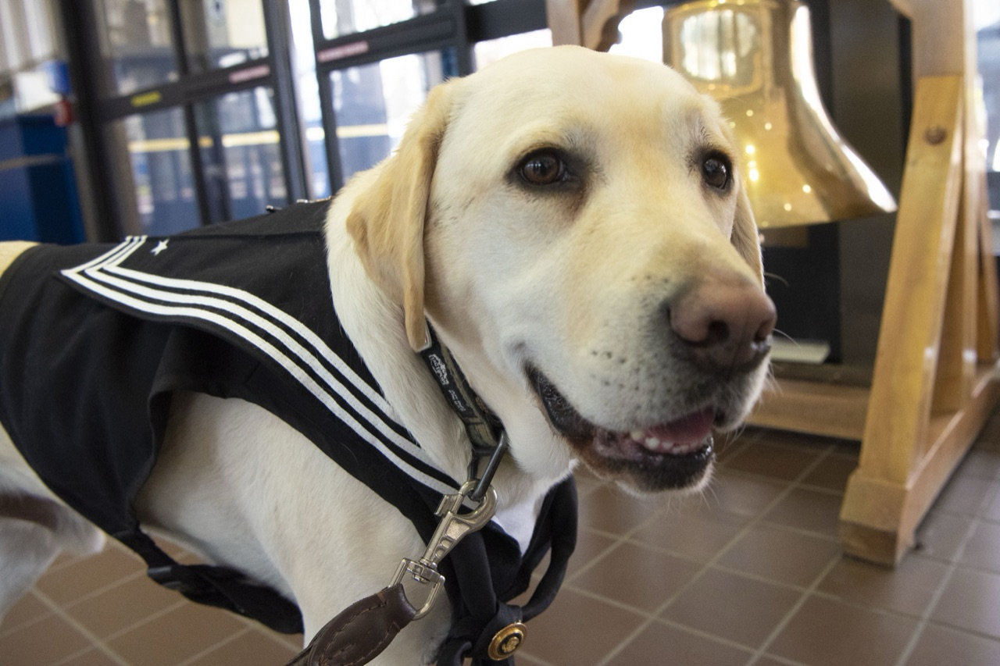
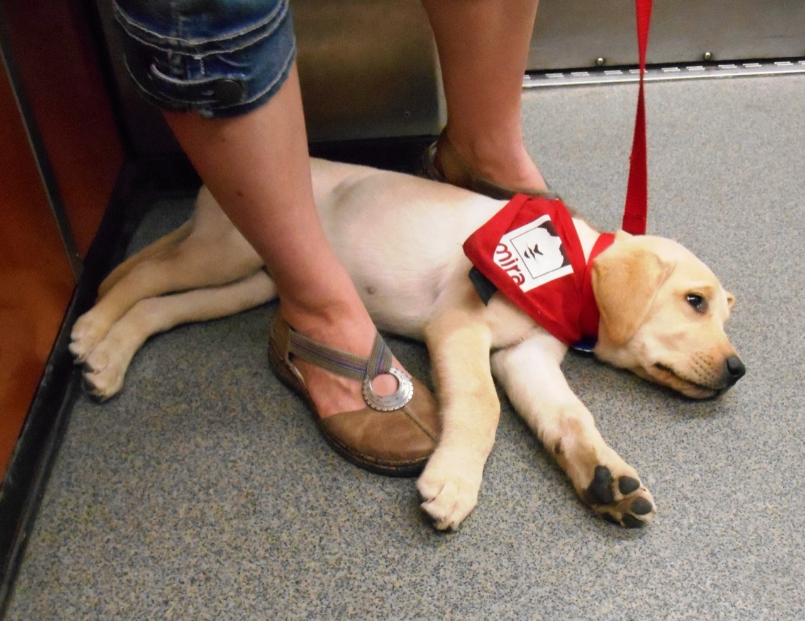
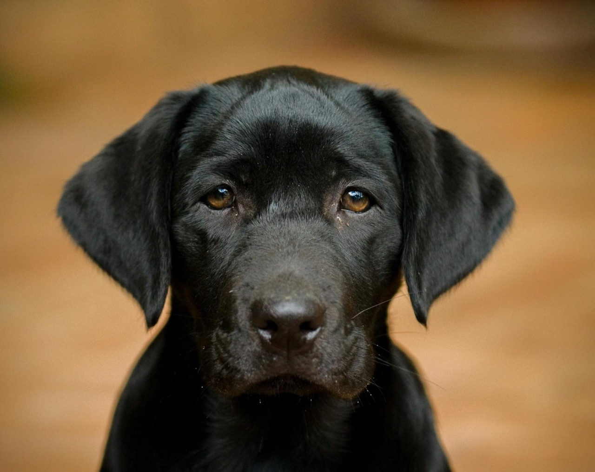

You already know two kinds of people. One of them got every advantage, a good home, money, a real shot, and grew up cruel. The other got nothing, or worse than nothing, and grew up kind. If where you start decided where you end up, that should be impossible. It happens all the time.
People have fought over why for a hundred and fifty years. Back in 1874 a scientist named Francis Galton gave the fight its name: nature versus nurture. One side says you are born who you are. The other says you are built by how you were raised. Here is the part both sides miss. There is a third thing, and it is the only one that was ever really yours. The easiest way to see all three is not a person. It is a dog.
The oldest fight
Two camps, each sure the other is wrong. They are both half right.
For a long time the two sides just took turns winning. The "made" camp had the louder slogan. In 1924 a psychologist named John Watson promised that upbringing was everything:
Give me a dozen healthy infants and my own world to bring them up in, and I'll guarantee to train any one of them to become any type of specialist I might select, doctor, lawyer, artist, and yes, even beggar-man and thief.John B. Watson, 1924
It is a famous line. The part nobody quotes is what he wrote next: "I am going beyond my facts, and I admit it." Because the "born" camp had the harder evidence, and it came from identical twins who were split up as babies and raised in different homes. A researcher named Thomas Bouchard spent years tracking these pairs down, and the results are almost spooky. Two men, separated as infants, met at thirty-nine and learned they had each married a woman named Linda, divorced her, married a Betty, and named a son James Allan. Same genes, different houses, the same life lived twice.
Add up enough twins and a number falls out: roughly half of your personality is written in your genes. And the strangest part, the one that catches everyone off guard, is that for intelligence the genes matter more as you get older, not less, climbing from about 40 percent in childhood to as much as 80 percent in adulthood. You slowly grow into the person your wiring was always pointing at.
So who won the fight? Both did. It is mostly over now, and the answer is that nature and nurture were never really enemies. They are partners. Your genes mostly sit and wait for the world to switch them on. And before the "born" side gets smug, remember that genes are odds, not orders. The famous "warrior gene" that headlines once blamed for violence turns out to predict almost nothing by itself.
A dog proves it
Why the best trainers on earth bet on breeding and on raising, on purpose.
If you want to watch nature and nurture work right in front of you, look at a service dog, because we build one on purpose. Start with nature. Every serious guide-dog school breeds its own dogs instead of taking whatever shows up, because the calm, steady, people-loving temperament the job needs runs in the blood. Pick the right parents and the next litter comes out better. The catch is that breeding only loads the odds. Sequence enough dogs and you find that the breed alone predicts less than ten percent of how any single dog actually behaves. You bet on the bloodline, then you still have to meet the dog.
Now raising. A puppy has a short window, roughly three to fourteen weeks old, when the world stamps itself on it for life. Miss that window, the way a puppy mill does, and you get a nervous, jumpy adult that no amount of training fully fixes. Use it, with a volunteer who hauls the pup onto buses and into grocery stores until the chaos of the world feels boring, and you get a dog that can lie still under a restaurant table for two hours. There is even a sweet twist in the research: the puppies of easy, doting mothers wash out more often than the puppies of mothers who made them work a little for the milk. A soft start is not the gift it looks like.
So a finished service dog is the whole argument, settled, lying at your feet. Bred for the work, raised for the work, and the result is genuinely, deeply good. But look closer. The recipe has exactly two ingredients. For a dog, that is the entire story. Sully did not decide to be faithful. He was built faithful and raised faithful, and that is exactly why loving him is so simple. There is nobody in there choosing.

The third thing
The ingredient no dog has, and the reason those two people from the start turned out so different.
You are not a dog. You get a third ingredient, and it is so small and so constant that it hides in plain sight. You are walking across an empty parking lot, a wrapper slips out of your hand and misses the trash can, and there is nobody around for a hundred feet. Do you go back and pick it up? Nothing rides on that wrapper. Everything rides on the answer, because you will face some tiny version of it a few thousand times this week, and those answers do not disappear. They pile up. They harden into a person.

This is the oldest idea there is. Aristotle put it simply: you are not handed a character, you build one, the way you build a muscle. You become honest by telling the truth on the day it costs you something, then doing it again, until one day there is no decision left, you just are honest. Here is the whole essay in one line: to get the most out of life, you have to put the most in.
Watch how that plays out. Chase the easy thing, the comfortable thing, the thing you want, every single time, and a quiet trap closes. You do not get happier. Psychologists even have a name for it, the hedonic treadmill: every new comfort becomes your new normal, so you end up right back where you started, wanting more. And the more a person runs from their own pain, the more they tend to hand it to everyone else. There is a blunt phrase for this: hurt people hurt people. The wound you will not face gets passed down to a kid, a partner, a stranger who did nothing to you.
Do the opposite, the harder right thing even when no one is watching, and you slowly turn into someone steady and kind, the sort of person other people actually want around. I will not oversell it. The world is not a vending machine where good behavior drops out cash, and plenty of selfish people get rich. Doing right buys you a good life on the inside, not a guaranteed prize on the outside. But it settles the thing that matters most, which is what you do with your own pain, and whether you pass it down or let it stop with you. And here is the best news in this whole essay: most people, when it counts, choose to make it stop.
Pain is the door
Why almost nobody changes until it hurts enough.
Here is the hard part, and almost every wisdom tradition on earth seems to agree on it: almost nobody reaches for that third thing while life is comfortable. We reach for it when something breaks. The Buddha built his whole teaching on suffering. Saint Paul wrote that suffering makes endurance, endurance makes character, and character makes hope. The Stoics treated hardship like a sparring partner sent to toughen them up. Different centuries, different gods, the same lesson.
The impediment to action advances action. What stands in the way becomes the way.Marcus Aurelius
It is the oldest comeback story there is, and you have probably watched it happen. Someone with bad genes and a worse childhood, headed nowhere good, gets hit hard enough by life that they finally turn around, and becomes one of the best people you will ever meet. A criminologist named Shadd Maruna studied people who left crime behind and people who did not, and the surprise was that their pasts looked the same. What was different was the story they told about themselves: the ones who changed stopped blaming everyone else and started owning what came next.
But be careful, because this has a cruel edge. The pain itself does not make anybody better. Just as often, it just breaks them. The researchers who named "post-traumatic growth" are blunt that the growth comes from the struggle afterward, not from the wound, and that plenty of people get only the wound. There is no rule that you have to hit rock bottom first, and waiting around for one is its own kind of trap. Pain only opens the door. You still have to walk through it, and a lot of people never do.
The questions no one wants to answer
If pain is the teacher, the next questions get very uncomfortable. Ask them anyway.
If a little hardship is what grows people, then how should you raise a kid, hard or soft? The research is almost rude about it: neither. The clear winner, mapped out by a psychologist named Diana Baumrind, is warm and strict at the same time, high standards wrapped in obvious love. Pure pressure breaks kids. Pure softness leaves them lost. A little stress, with a safe adult to come home to, actually toughens a child; researchers call it a steeling effect. Too much, with nobody to lean on, just wrecks them. And here is the part no one can solve: the exact dose that toughens one child crushes the next, and you usually cannot tell which kind you have until it is too late. There is even good evidence that, inside a normal home, your parenting style matters less to who your kid becomes than you desperately want it to.
Then the darkest question of all. If your own genes are loaded toward addiction, or violence, or despair, should you even have kids? People have answered that with a knife, and it was a catastrophe. The same Galton who named "nature versus nurture" also coined the word "eugenics," and the movement that grew out of it forcibly sterilized more than sixty thousand Americans. In 1927 the Supreme Court signed off, eight to one, and Justice Oliver Wendell Holmes wrote the sentence:
Three generations of imbeciles are enough.Oliver Wendell Holmes Jr., 1927
It was all built on a lie. The woman that ruling called feebleminded had simply been locked away to hide a rape, and her daughter went on to make the school honor roll. Your blood is not your sentence. Heritability is a fact about big crowds of people, never a prophecy about you; it deals the cards, it never plays them. (There is even a fringe philosopher, David Benatar, who argues it is wrong to have children at all. He is worth a mention only so we can set him back down.) Nobody is doomed by their ancestry, and believing they are is the exact lie that built those sterilization tables.
The same chance
What I can show you, and the one thing I just believe.
Step back from all the studies and one big question is left that no study can touch. Is any of this watched? Is there a grain to the world that runs with the kind and against the cruel? Most of humanity has bet yes. Hindus and Buddhists call it karma, the idea that what you do comes back around on its own, with no judge required. The Bible says it shorter, in Galatians: a man reaps what he sows. The Bhagavad Gita gives my favorite version, do the right thing and let go of whatever you get for it.
I have to be straight with you, though, because the science here cuts against me. Researchers have shown that people who badly need the world to be fair end up blaming its victims, deciding the suffering must have somehow earned it. The world is plainly not fair; the rain falls on the good and the cruel alike. And the popular move of saying it all runs "at the quantum level" does not hold up, because no real physics says your mind bends reality. There is a genuine mystery about why we have an inner life at all, but "quantum" is not a fancy word for "spiritual."
So here is where I stop reporting and start confessing, and I will label it plainly as belief, not fact. I think there is some kind of moral order, woven in at a level we cannot see yet, and that what you put out into the world is not lost. I think every single person alive gets handed the same offer: the chance to turn, and start living a good life, available the second you want it badly enough to pay for it. And I think the saddest thing about us is the one the research keeps quietly proving, that almost nobody takes the offer until they have hurt enough, and that some people die with it still sitting there, never once reached for.

You don't pick your genes. You don't pick your childhood.
You get the third thing.
That is the good news, not the bad. The dog cannot choose; you can. Sully is good because he was made good, all the way down, and that is exactly why loving him is so simple. You are the other kind of animal, the kind with a gap between what you want and what you do. Everything you really are lives in that gap: the wrapper picked up in the empty lot, the grudge finally set down, the right thing done when nobody is watching and there is no treat coming. Your hand is dealt and your childhood is spent. The third thing is still open. It does not close because you were born wrong, or raised wrong, or have wasted years already. It only closes when you do.
Where this comes from
Almost nothing here is my own idea. It is a stack of real research and old wisdom pressed into a short essay. If a piece of it stuck with you, here is where it lives in full, and where you can go argue with it.
Nature, nurture, and the dog
- Francis Galton coined "nature versus nurture" (1874); John Locke's blank slate and J. B. Watson's behaviorism made the case for "raised."
- Thomas Bouchard, the Minnesota Study of Twins Reared Apart, and Robert Plomin, Blueprint, made the case for "born."
- The Wilson effect (genes matter more with age); Gould and Lewontin, the critics; Matt Ridley, Nature via Nurture.
- On dogs: the Darwin's Ark genome study (2022); Goddard & Beilharz, Scott & Fuller, and Emily Bray on breeding and raising.
Character, and how people change
- Aristotle, Nicomachean Ethics: you build a character by repetition.
- The hedonic treadmill (Brickman & Campbell); Roy Baumeister on a happy life versus a meaningful one; Adam Grant, Give and Take.
- The cycle of abuse, and how most people break it (Kaufman & Zigler, 1987); Shadd Maruna, Making Good, on who quits crime and why.
Pain and the traditions
- The Buddha's Four Noble Truths; the Stoics, Marcus Aurelius and Epictetus; Paul, Romans 5.
- Tedeschi & Calhoun on post-traumatic growth: the growth is in the struggle, not the wound.
The hard questions
- Diana Baumrind on parenting styles; the "steeling effect" and toxic stress; the orchid and the dandelion (differential susceptibility); Judith Rich Harris, The Nurture Assumption.
- Buck v. Bell (1927) and the eugenics catastrophe; David Benatar, the antinatalist case, named only to set it aside.
Karma, and the limits of proof
- Karma in the Hindu and Buddhist traditions; Galatians; the Bhagavad Gita.
- Melvin Lerner, the just-world hypothesis (why we blame victims); David Chalmers, the "hard problem of consciousness."
Photographs: Sully by Lisa Ferdinando (U.S. Department of Defense, CC BY 2.0); twins, U.S. Navy (public domain); German Shepherd by Noah Wulf (Wikimedia, CC BY-SA 4.0); Mira puppy by Jeangagnon (Wikimedia, CC BY-SA 3.0); litter by Mikhail Nilov and the Labrador by Paul Groom (Pexels).